Produtos
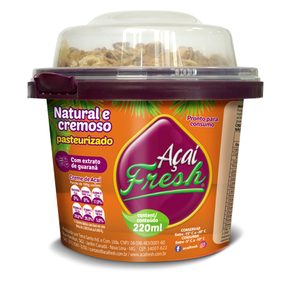
NATURAL 220ML
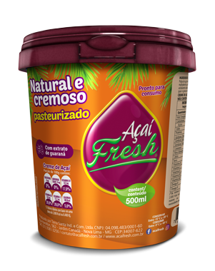
NATURAL 500ML
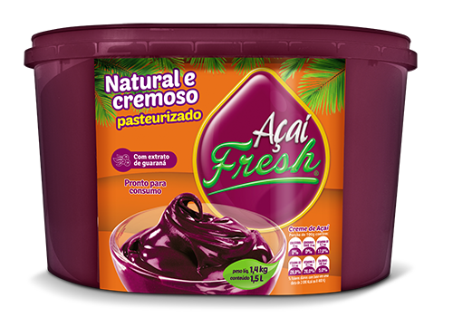
NATURAL 1,5L
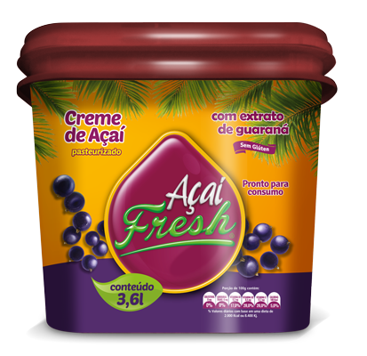
NATURAL 3,6L
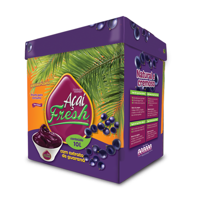
NATURAL 10L
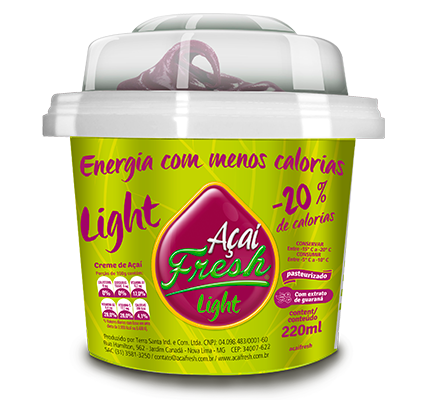
LIGHT 220ML
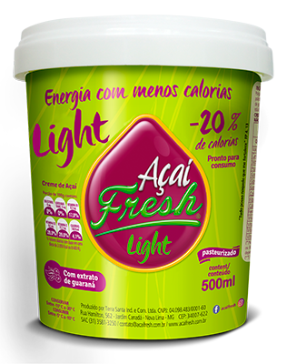
LIGHT 500ML

LIGHT 1,5L

LIGHT 3,6L
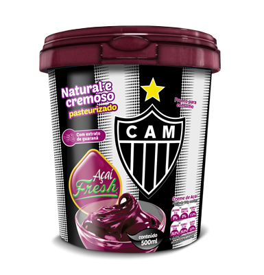
CLUBES ATLETICO 500ML

CLUBES ATLETICO 1,5L
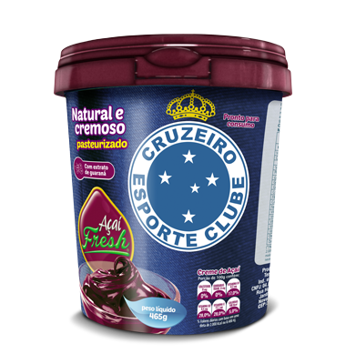
CLUBES CRUZEIRO 500ML

CLUBES CRUZEIRO 1,5L
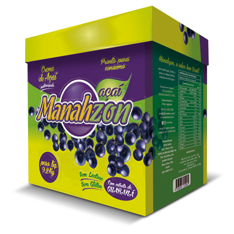
MANAHZON 10L

AÇAÍ COM EXTRATO DE GUARANÁ
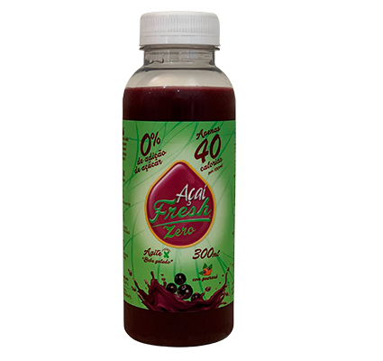
AÇAÍ COM EXTRATO DE GUARANÁ ZERO
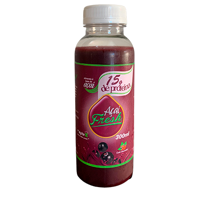
AÇAÍ COM 15G DE PROTEÍNA
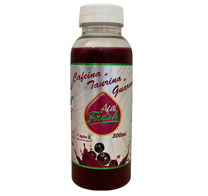